Stage de fin d'études · ENSTA – CNRS Lab-STICC, Brest / Grenoble · mars – août 2026
Conception mécatronique et modélisation dynamique d'un nageur bio-inspiré du nudibranche Spanish Dancer. J'ai développé le mécanisme de propulsion à nageoire circulaire flexible et l'électronique de contrôle sur ESP32. J'ai aussi défini les protocoles d'essais en bassin et mesuré les performances de propulsion par suivi vidéo.
Stage de recherche de 2e année · Université d'Oldenburg, Allemagne · mai – sept. 2025
Développement d'une chaîne de vision 3D pour détecter et localiser des objets dans l'espace, puis implémentation des lois de commande d'un bras manipulateur polyarticulé sous Linux, Python et ROS 2. J'ai mené des expériences de préhension et de manipulation d'objets en environnement dynamique.
ROS 2 · Python · vision 3D · bras manipulateur
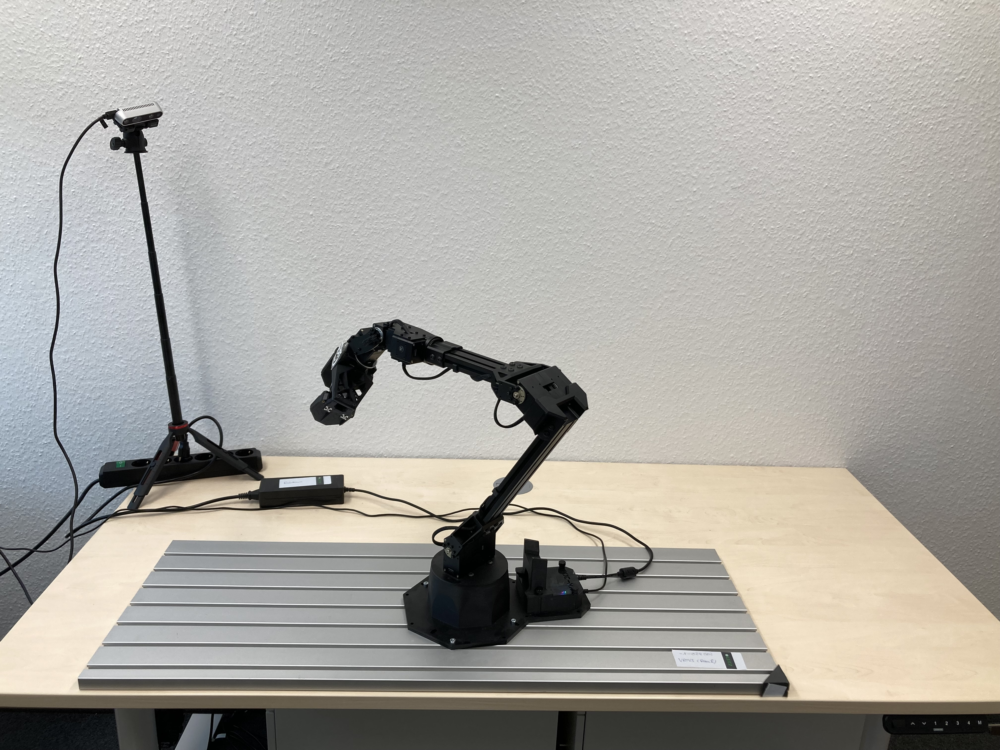
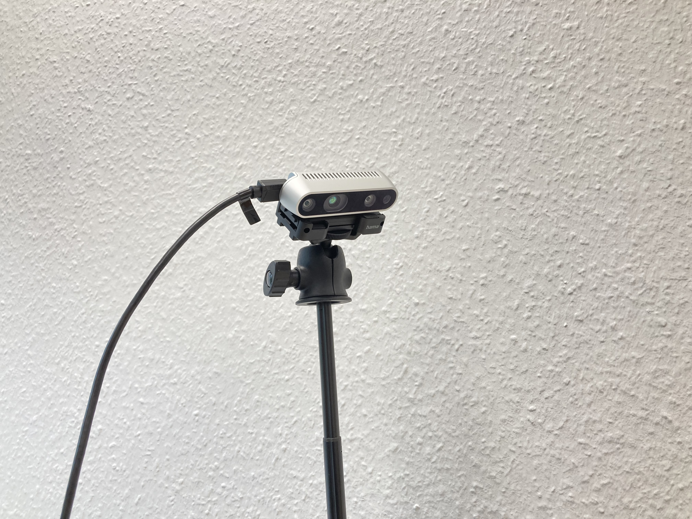
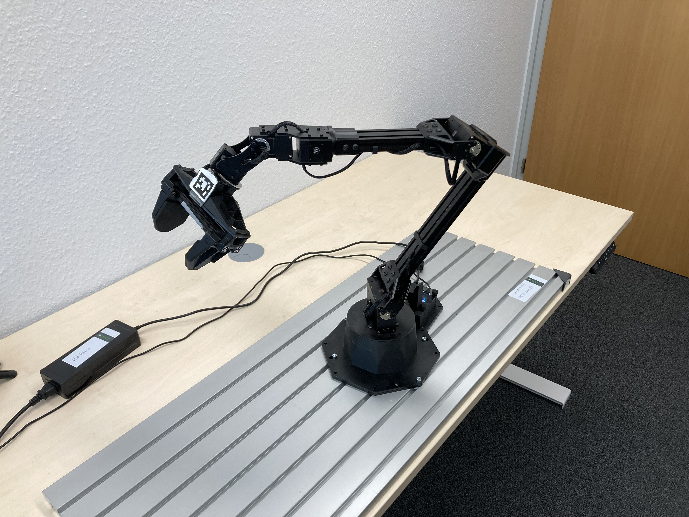
Subsurface UAV : drone sous-marin autonome
Projet de groupe de 3e année · ENSTA, Brest · 2025 - 2026
Conception, fabrication et essai d'un drone sous-marin autonome, navigant sous la surface de l'eau, et capable de plonger à une profondeur donnée grâce à ses ailes. J'ai rélaisé la CAO et la fabrication du drone, et son étanchéification.
Des tests concluants ont été réalisés en conditions réelles à l'école navale (Brest)
CAO · étanchéité · équilibrage
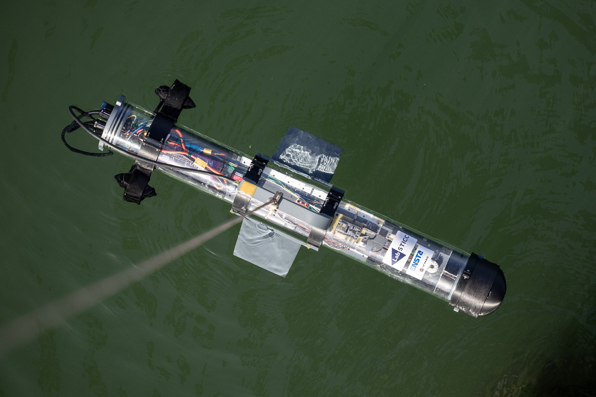
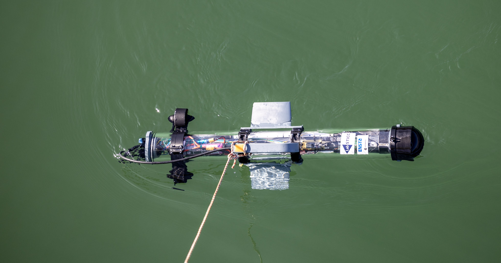
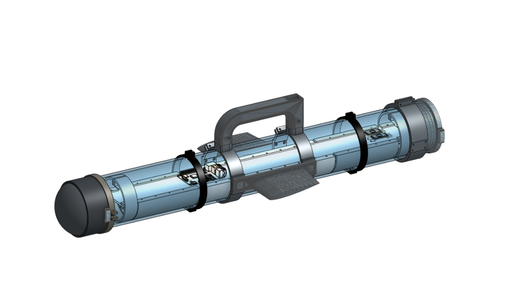
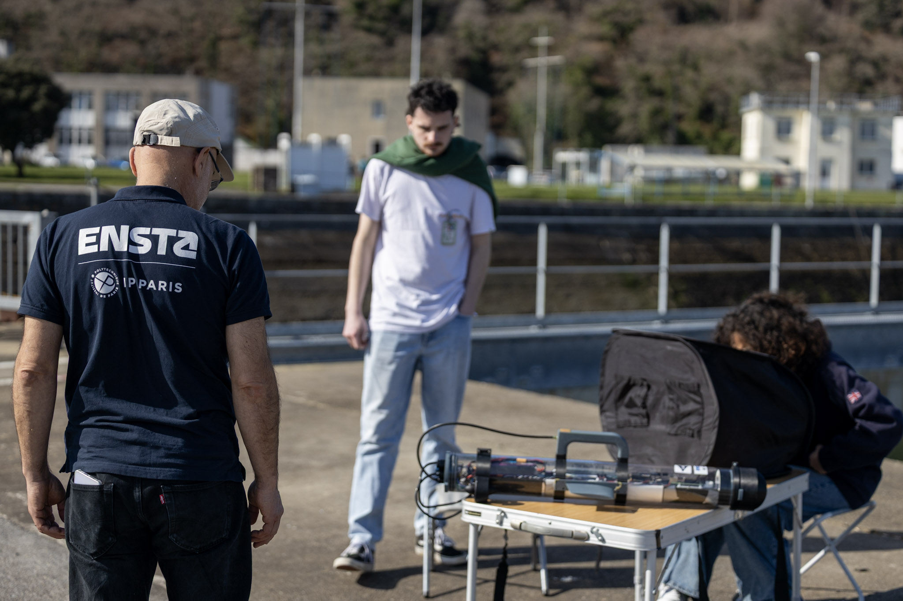
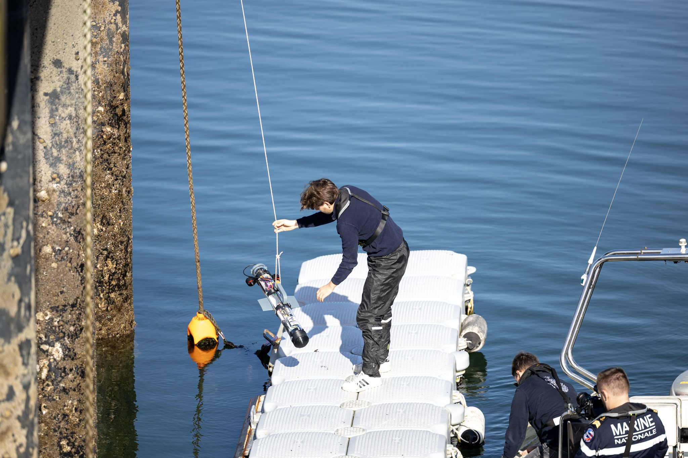
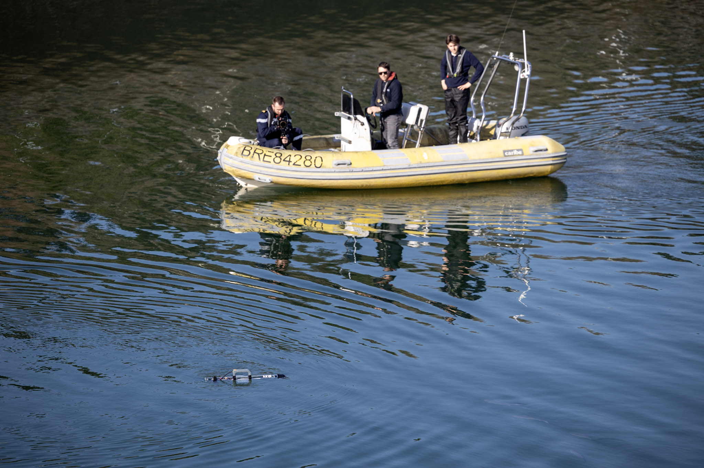
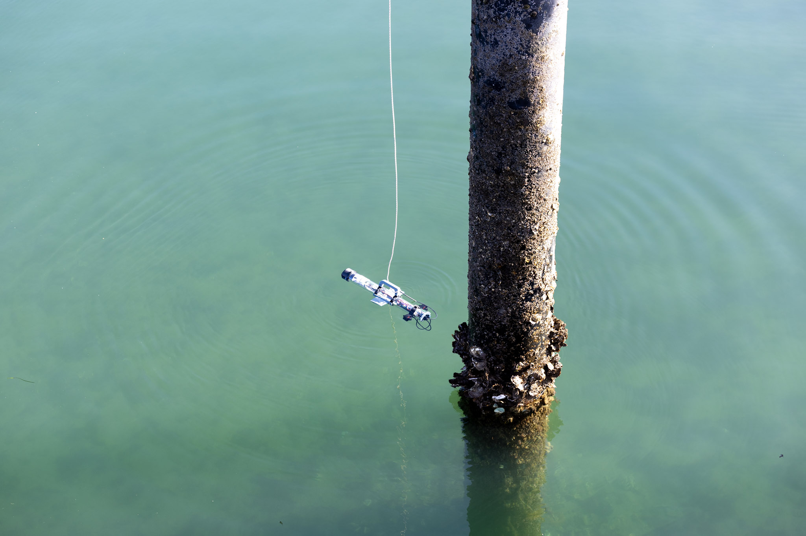
Drone quadricoptère aéro-sous-marin
Projet de grouoe de 2e année · ENSTA, Brest · 2024 – 2025
Conception CAO, fabrication et étanchéification d'un drone hybride capable de voler et de plonger. L'architecture embarquée repose sur un contrôleur Pixhawk couplé à une Raspberry Pi sous Linux. J'ai développé la logique de contrôle et d'autonomie pour des missions de surveillance d'infrastructures côtières.
Pixhawk · Raspberry Pi · CAO · étanchéité
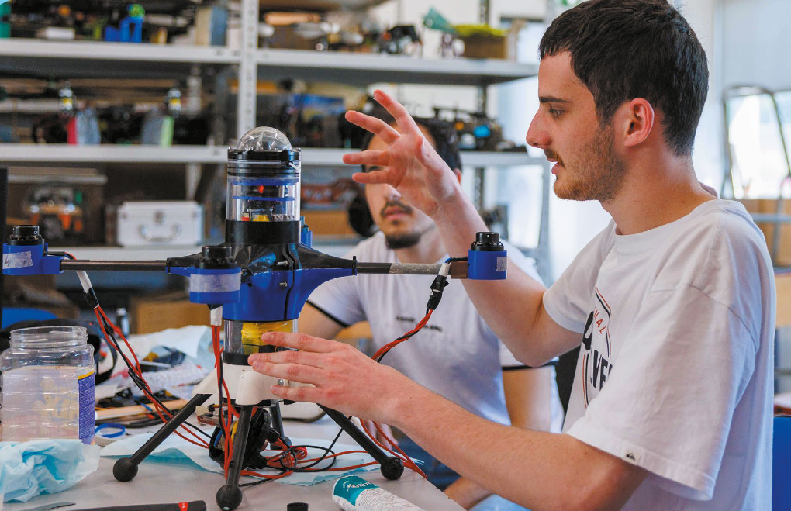
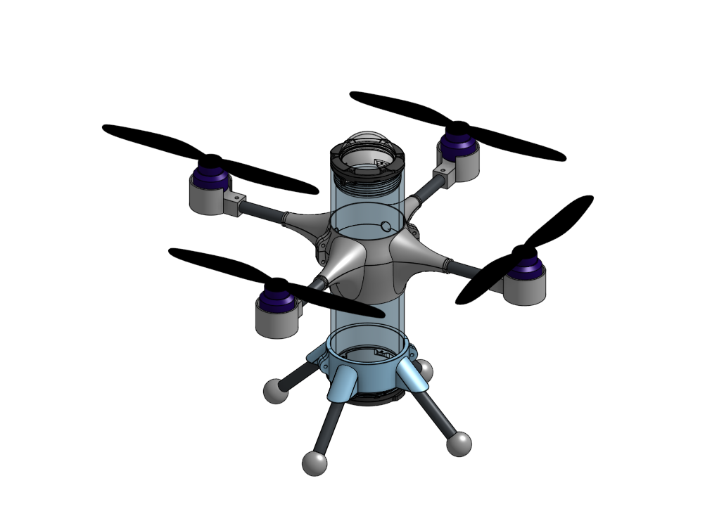
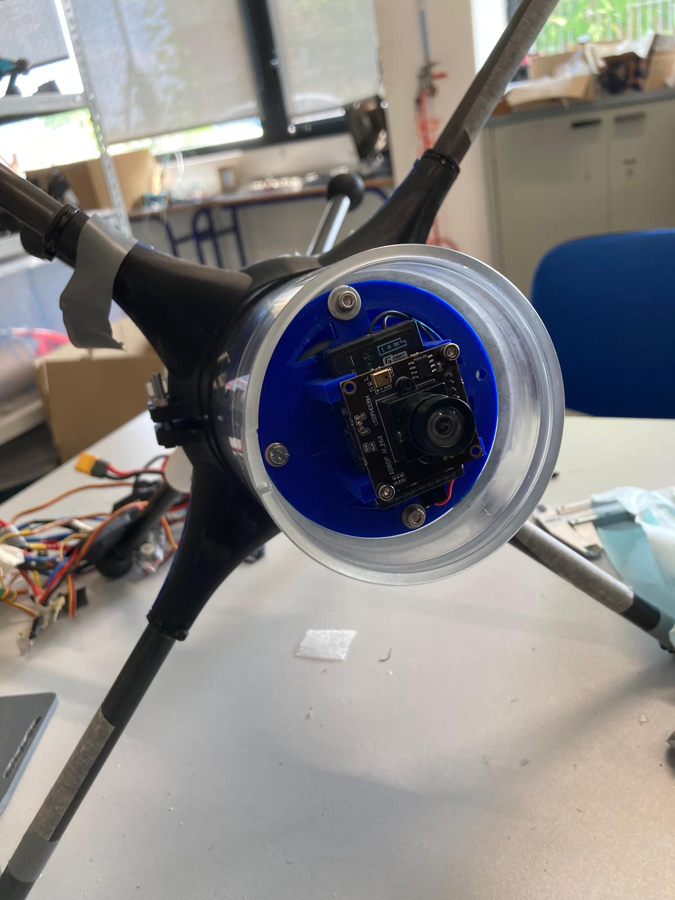
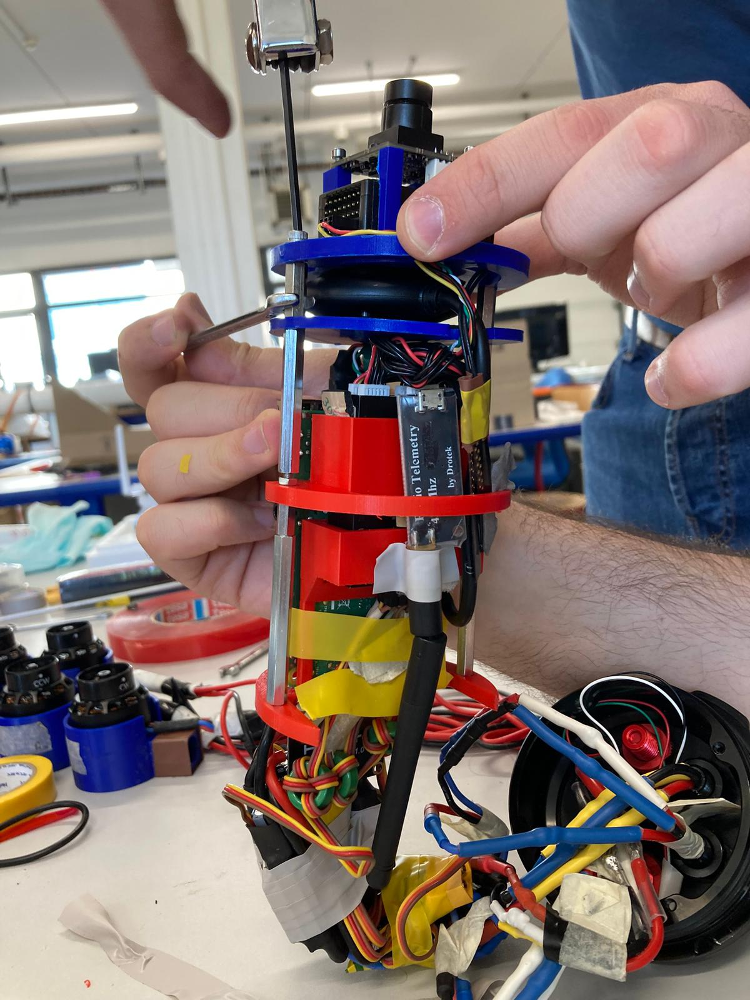
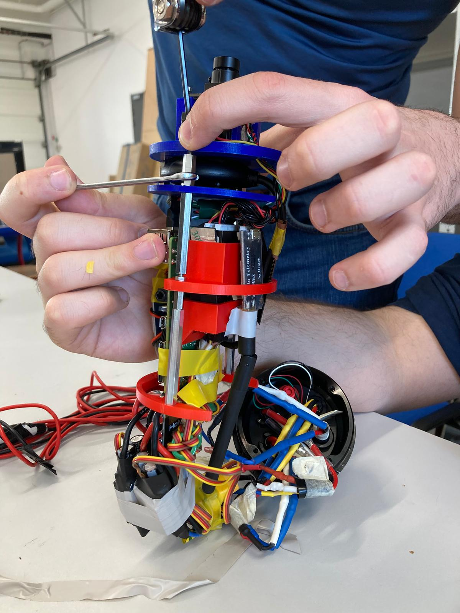
Scouts : une flottille de robots sous-marins
Projet de 3e année · ENSTA Bretagne, lac de Guerlédan · 2025 – 2026
Étude et implémentation d'algorithmes d'observation et de commande par intervalles pour des robots sous-marins en environnement incertain. J'ai intégré le système de communication qui permet aux robots de coopérer en essaim. Les algorithmes ont été validés lors d'essais en conditions réelles sur le lac de Guerlédan.
Méthodes ensemblistes · communication multi-robots · essais in situ